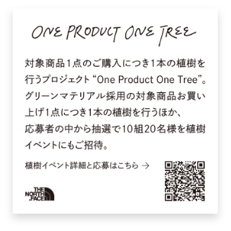

植樹イベントについて

日程と概要
【日程】2023年10月14日（土）
【概要】千葉県君津市「三井物産の森」での日帰り植樹・間伐体験イベントです。森の中での植樹体験に加え、森林を管理しているスタッフ指導の元で間伐や下草刈り体験も予定しております。
※雨天で植樹が難しい場合、午前中に森林を管理しているスタッフによる木の伐倒作業見学、午後は近隣施設の「君津亀山青少年自然の家」にてワークショップを開催予定です。
【場所】千葉県君津市三井物産の森（亀山山林）
【アクセス】東京駅前から貸切バスで現地までご案内いたします。
※ご自宅から東京駅までの往復交通費はご当選者様のご負担となります。
【スケジュール（予定）】東京駅（8:00集合・出発）= バス移動 = 千葉県君津市三井物産の森（植樹・間伐体験）= バス移動 = 東京駅（18:00着・解散）
【当選人数】10組20名様
※ご当選者様お一人様でご参加いただくことも可能です。
【応募期間】2023年3月3日（金）10:00 〜 2023年4月16日（日）23:59
【応募資格】ご応募は日本国内にお住まいの方に限らせていただきます。
【応募方法】本キャンペーンのノベルティステッカー裏面にあるQRコードから応募ページにアクセスしてください。応募フォームに必要事項を全てご入力の上、お申し込みください。
弊社にて厳正なる抽選を行い、2023年4月21日（金）までに抽選結果をメールにてご連絡いたします。
-
-
